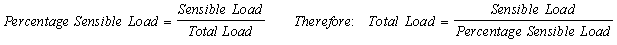
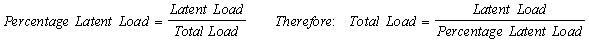
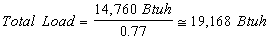
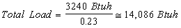

Percent Sensible Capacity (System Data Window) |
  
|
Percent Sensible Capacity (System Data Window) |
|
Percent Sensible Capacity (Pct. sens. capacity): This field allows you to input a percentage that describes what portion of the system's cooling capacity is its sensible capacity, which is used to calculate the Recommended Cooling Tons.
The value you enter here will also be used to set the Sensible Capacity and Latent Capacity inputs on the Equipment tab of this window when you select an air conditioner or heat pump for this system using the Find HVAC Equipment window.
For an example of how Recommended Tonnage is determined, say that you have a building that has calculated cooling loads of 14,760 Btuh sensible and 3,240 Btuh latent. That would produce a 18,000 Btuh net load. Now say that you know that most of your line of air-conditioning units have a split on their capacities of approximately 77% sensible and 23% latent. If you chose a unit with a 18,000 Btuh net capacity (1.5 tons), then the unit would possess 13,860 Btuh sensible capacity (77% of 18,000 Btuh) and 4,140 Btuh latent capacity (23% of 18,000 Btuh). Therefore, the latent portion of your load would be met, but the sensible portion would not.
Consider the following equations:

Likewise:

By "Percentage", we mean the fractional number (i.e. 77% = 77/100 = 0.77).
Now, if we assume that the sensible load is equal to the sensible capacity of the unit, we are basically saying that we assume that 14,760 Btuh is 77% of the total load. Therefore, a total calculated load based on this assumption would be:

But, if we assume that the latent load is equal to the latent capacity of the unit, we are basically saying that we assume that 3240 Btuh is 23% (100% - 77%) of the total load. Therefore, a total calculated load based on this assumption would be:

Compare the two total loads calculated from the assumed 77%/23% split. As you can see, the highest total load in this case happens to come from the sensible portion. Therefore, you might need a somewhat larger unit than what would be specified from looking strictly at the building loads. You can check that the unit will meet your loads by back calculating. In other words, 77% of 19,168 Btuh (about 1.6 tons) is 14,760 Btuh and 23% of 19,168 Btuh is approximately 4409 Btuh. As you can see, both the sensible and latent portions of the load will be met by a unit that possesses a capacity greater than or equal to 19,168 Btuh.
This value will NOT change your net loads or your net cooling tons. The net loads and net cooling tons are based strictly on the sensible + latent gain of the building. It will, however, affect your square foot per ton and other check figures that involve cooling tons. This value defaults to 75%. A good general range for the percentage input is between 73% - 78%.